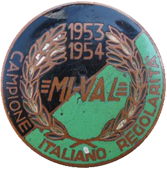

Modelli:
- 125 T
- 125 N
- 125 Nt
- 125 NS
- 125 GT
- 125 GS
- 125 GSa
- 125 GL
- 125 N55
- 125 Na
- 125 M5L
- 125 4MT
- 125 6G "6 giorni"
- 175 L
- 200 TV
- 200 Principe
- 350/500

Perchè questo sito dedicato alle moto MI-VAL?
Il primo motivo è che sono nato a Gardone Val Trompia, sono un motociclista, e sono appassionato di moto d'epoca, quindi vado fiero di un prodotto della mia Valle. Il secondo motivo è che mio nonno materno ha lavorato per oltre 30 anni in questa azienda, ed è stato un felice possessore di diversi modelli. L'ultimo, un 200 Principe perfettamente conservato grazie alle cure con cui il nonno ha mantenuto il suo mezzo, rappresenta attualmente, oltre ad alcuni ciclomotori, il "pezzo" forte della mia collezione. In casa mia quindi si è sempre parlato di MI-VAL, e quando ho compiuto 14 anni, mio padre, invece di comprarmi il "fifty" o il "cobra" (ciclomotori allora di moda), mi ha sistemato il vecchio “mivalino” 48 cc 4 marce di mio zio, col quale ho cominciato la mia esperienza motociclistica.
BREVE STORIA DELLA MI-VAL
La MI-VAL nasce nel 1950 a Gardone Val Trompia ad opera del bolognese Minganti e altri soci, tra cui la fabbrica d'armi Pietro Beretta ( inizialmente il marchio significa MInganti VALtrompia, successivamente Metalmeccanica Italiana VALtrompia).Le prime motociclette prodotte ( 125 T) sono una copia quasi perfetta della DKW 125, sia nel propulsore che nella ciclistica. I modelli a 2 tempi che negli anni successivi affiancano il modello T, ad esclusione del "6 Giorni", sono essenzialmente una evoluzione estetica del modello iniziale. Le moto MI-VAL furono tra le più diffuse degli anni 50, grazie alla loro fama di essere economiche e robuste, tuttavia in alcuni modelli si cercarono delle soluzioni stilistiche più raffinate al fine di soddisfare anche i motociclisti più esigenti.Negli anni successivi furono realizzati anche modelli a 4 tempi, a 4 e 5 marce, nelle cilindrate di 125, 175 e 200 cc, che però non ebbero la diffusione delle famose 125. Famoso è anche il "Mivalino" 175, un tre ruote cabinato costruito su licenza della Messerschmitt. In catalogo è riportato anche un motofurgone di 175 cc. Da ricordare inoltre la produzione di numerosi modelli di ciclomotori a 2 tempi 48 cc. La morte di Minganti e la crisi nel settore motociclistico portarono la MI-VAL ad abbandonare progressivamente la produzione di motocicli. L'azienda entrò maggiormente nella sfera Beretta, e quindi cominciò a compartecipare alla produzione armiera oltre a quella di macchine utensili. Negli anni 90 il settore delle macchine utensili e il marchio sono stati ceduti dalla Beretta, e la scritte MI-VAL sono scomparse dai muri della fabbrica di Gardone Val Trompia.
Torna alla Home Page di Alessio Ghisla


Albo
d'oro
(Le competizioni)
[In preparazione]
Se vuoi inserire le foto del tuo motociclo o ciclomotore su questo sito mandami una e-mail!